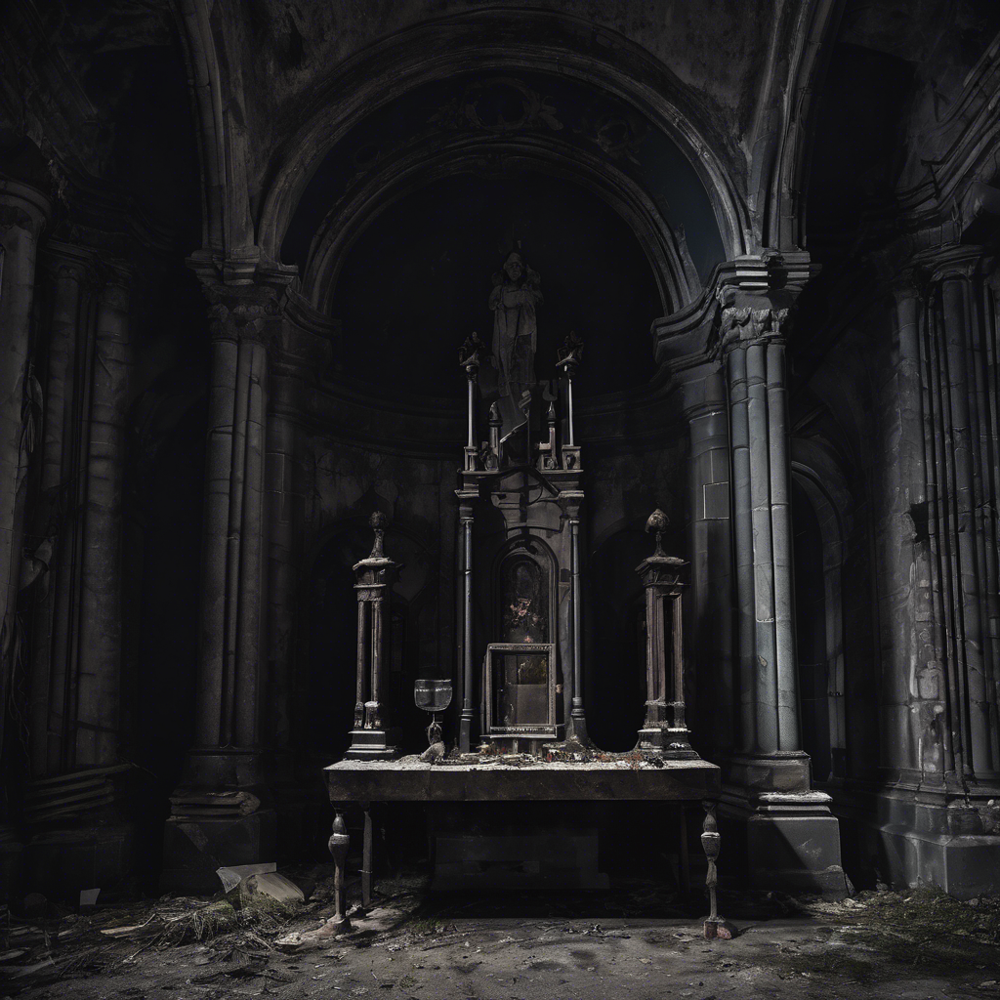

A kripta bejárata körül bokrokat és mohával benőtt sziklákat találsz. Miközben óvatosan keresgélsz, figyelmedet egy mohos, alacsony oltár vonja magára. Rajta egy apró, fémből készült amulett fekszik, amelyen egy stilizált lángmotívum izzik tompán. Amint megésrinted, egy forró érzés árad végig a karodon, majd egy látomás villan fel a szemed előtt: egy hang szólal meg mélyen a tudatodban – „A korona csak a bátor, de tiszta szívűnek engedelmeskedik.” A látomás elillan, te pedig ösztönösen elteszed az amulettet. Visszatérsz a kriptához, és belépsz.
Menj a 2-es bekezdésre.